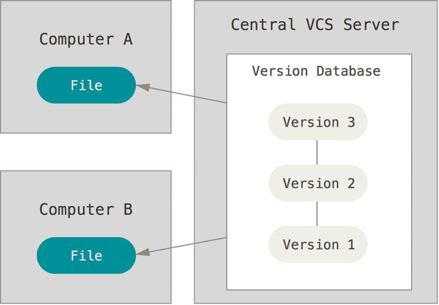
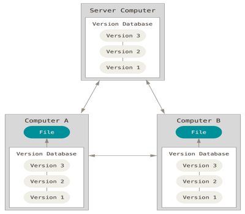
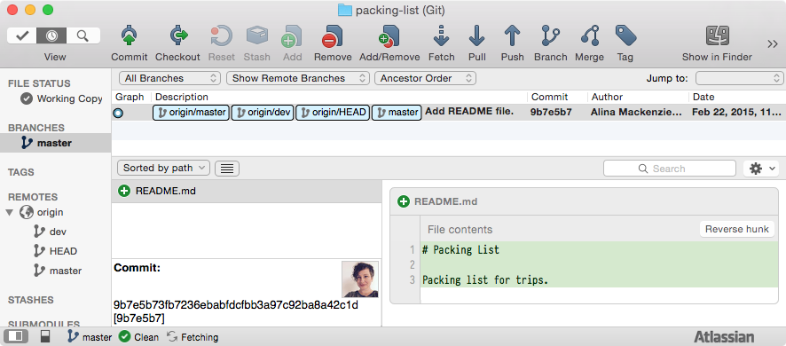

#MidCamp
Let's Learn Git /
Alina Mackenzie
Let's Learn Git
https://2015.midcamp.org/session-proposal/lets-learn-git
MidCamp 2015
#MidCamp
Alina Mackenzie
alimac / @czaroxiejka
University of Illinois at Chicago
http://alim.ac
Storytelling
Photo by Suzanne Koch, Flickr.com
Version control
- record changes
- revert to an earlier state
- tell a story
Photo by Annadriel, Flickr.com
Writing stories about our projects with git
Photo by Annadriel, Flickr.com
Distributed vs centralized
- centralized
- latest version, changes go to central server
- decentralized
- copy of the entire project, commit locally
Photo by Susanne Nilsson, Flickr.com
Centralized
Photo by Susanne Nilsson, Flickr.com | Diagram by Scott Chacon and Ben Straub, git-scm.com
Distributed
Photo by Susanne Nilsson, Flickr.com | Diagram by Scott Chacon and Ben Straub, git-scm.com
Commands or app
Commandline
Mac, Windows, Linux, Solaris
Apps
- SourceTree
- GitHub for
- SmartGit
Photo by Bill Gracey, Flickr.com
SourceTree
Name and email
git config --global user.name "Alina Mackenzie"
git config --global user.email hello@alim.ac
Photo by Daniel, Flickr.com
Show configuration
git config -l
user.name=Alina Mackenzie
user.email=alimknz@gmail.com
Photo by Daniel, Flickr.com
Try these
git config --global
color.ui true
core.excludesfile /Users/alimac/.gitignore
core.whitespace trailing-space
Photo by Daniel, Flickr.com
The setting
- local repository
- a project folder on my computer
- remote repository
- repository that multiple people contribute to
Photo by El Condor, Flickr.com
Packing list
- packing-list
- README.md
- Contents of README.md
# Packing List Packing list for trips.
Photo by El Condor, Flickr.com
Create repository
cd packing-list
git init
Initialized empty Git repository in /Users/alimac/packing-list/.git/
- .git/
- hidden folder where your repository's snapshots and history are stored
Photo by El Condor, Flickr.com
Phases
- Untracked
- Git doesn't know about it.
- Tracked
- Git knows about it and tracks changes.
- Staged
- A changed file is ready to be commited.
- Committed
- Changes to the file are saved to history.
- Pushed
- Changes are pushed to remote repository.
Photo by Luis Argerich, Flickr.com
Three sidekicks
"Where am I?"
"What is going on?"
"What did I just do?"
Photo by christina robinson, Flickr.com
Status
Where am I?
git status
On branch master
Initial commit
Untracked files:
(use "git add <file>..." to include in what will be committed)
README.md
nothing added to commit but untracked files present (use "git add" to track)
Photo by christina robinson, Flickr.com
Status
git add README.md
git status
On branch master
Initial commit
Changes to be committed:
(use "git rm --cached <file>..." to unstage)
new file: README.md
Photo by christina robinson, Flickr.com
README.md
# Packing List
Packing list for trips.
* laptop
* skirt with pockets
* toothbrush
Photo by christina robinson, Flickr.com
Status
On branch master
Initial commit
Changes to be committed:
(use "git reset HEAD <file>..." to unstage)
modified: README.md
Changes not staged for commit:
(use "git add <file>.." to update what will be committed)
(use "git checkout -- <file>..." to discard changes in working directory)
modified: README.md
Photo by christina robinson, Flickr.com
Diff
What's going on?
git diff
diff --git a/README.md b/README.md
index daa8d60..da0a4b2 100644
--- a/README.md
+++ b/README.md
@@ -1,3 +1,7 @@
# Packing List
Packing list for trips.
+
+* laptop
+* skirt with pockets
+* toothbrush
Photo by christina robinson, Flickr.com
Let's make history
git commit -m "Initial commit."
[master (root-commit) 1c50eb4] Initial commit.
1 file changed, 3 insertions(+)
create mode 100644 README.md
Photo by christina robinson, Flickr.com
log
What just happened?
git log
commit b9fd7596e44051a99b683a19982c592fdcbca5a5
Author: Alina Mackenzie <hello@alim.ac>
Date: Wed Mar 8 12:10:25 2015 -0500
Initial commit.
Photo by christina robinson, Flickr.com
log
What just happened?
git log -p
commit b9fd7596e44051a99b683a19982c592fdcbca5a5
Author: Alina Mackenzie <hello@alim.ac>
Date: Wed Mar 8 12:10:25 2015 -0500
Initial commit.
diff --git a/README.md b/README.md
new file mode 100644
index 0000000..daa8d60
--- /dev/null
+++ b/README.md
@@ -0,0 +1,3 @@
+# Packing List
+
+Packing list for trips.
Photo by christina robinson, Flickr.com
Commit
"A set of related and reversible changes that function together as a unit of work."
Photo by Kathleen Typer-Conklin, Flickr.com
Interactive staging
- git add -p
- Asks which changes to stage
README.md
# Packing List
Packing list for trips.
## Technology
* laptop
## Clothes
* skirt with pockets
## Toiletries
* toothbrush
Photo by christina robinson, Flickr.com
git add -p
diff --git a/README.md b/README.md
index da0a4b2..9e775a7 100644
--- a/README.md
+++ b/README.md
@@ -2,6 +2,11 @@
Packing list for trips.
+## Technology
* laptop
+
+## Clothes
* skirt with pockets
+
+## Toiletries
* toothbrush
Stage this hunk [y,n,q,a,d,/,s,e,?]?
Photo by christina robinson, Flickr.com
Split
Stage this hunk [y,n,q,a,d,/,s,e,?]? s
Split into 3 hunks.
@@ -2,4 +2,5 @@
Packing list for trips.
+## Technology
* laptop
Stage this hunk [y,n,q,a,d,/,j,J,g,e,?]?
Photo by christina robinson, Flickr.com
Commit message
git commit
Short descriptive subject line.
Longer description in the form of paragraphs
that include reasons for the change, reference
tickets or other commits.
Photo by christina robinson, Flickr.com
Push
Add a remote repository
git add remote origin git@bitbucket.org:alimac/packing-list.git
Push commits to remote repository
git push -u origin master
Photo by christina robinson, Flickr.com
Undo
Photo by Melissa Hincha-Ownby, Flickr.com
Branch
Photo by lamoix, Flickr.com
Merge
Photo by Nige Harris, Flickr.com
Rebase
Photo by Leo Reynolds, Flickr.com
Conflict
Photo by Holger, Flickr.com
Workflow
Photo by Mark Chadwick, Flickr.com
Goodies
Photo by Ginny, Flickr.com.
Resources
-
Atlassian git tutorials
atlassian.com/git/tutorials -
Pro Git book
git-scm.com/book/en/v2
Photo by Moyann Brenn, Flickr.com